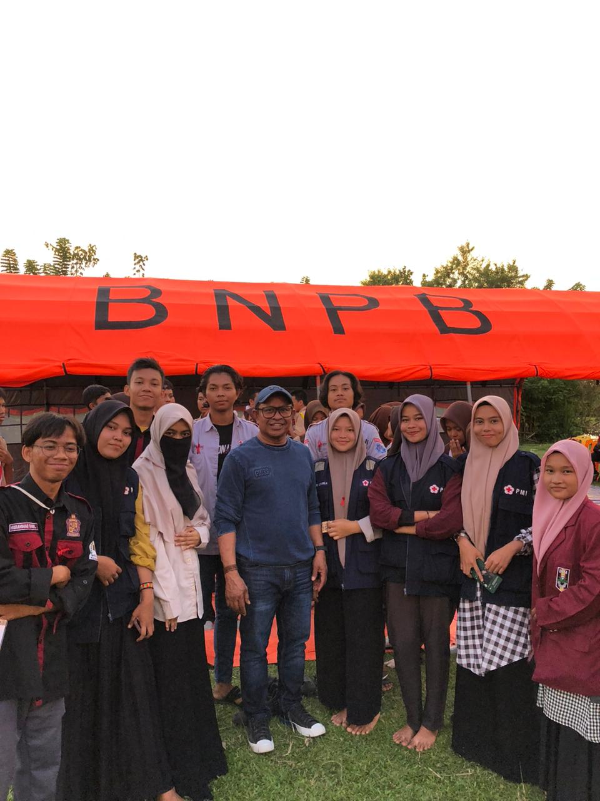
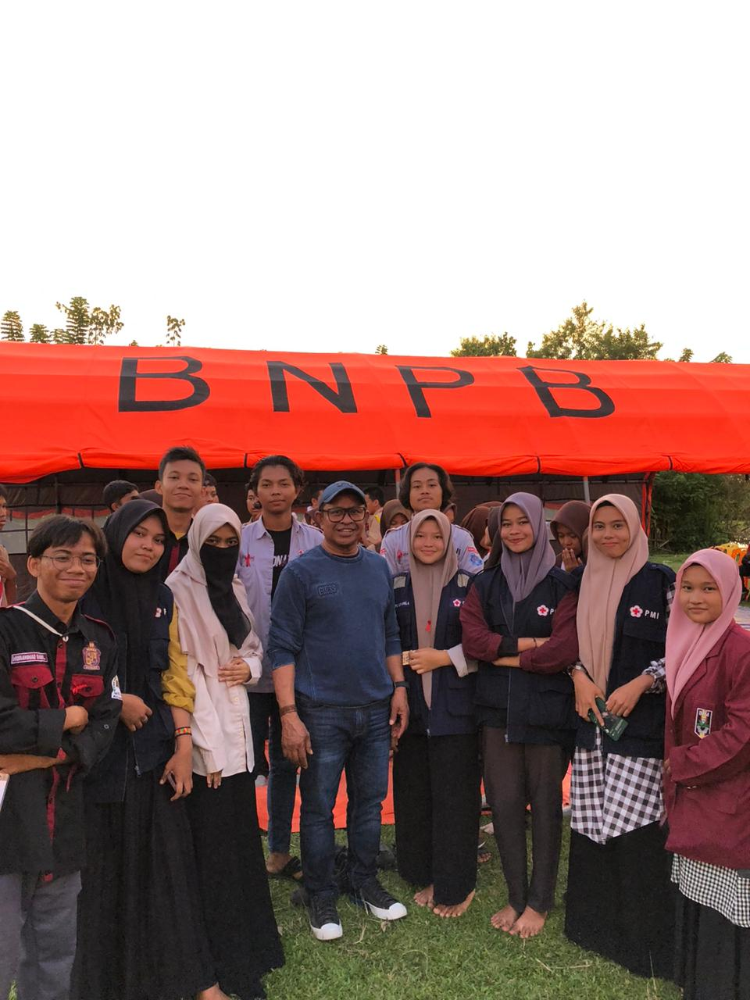
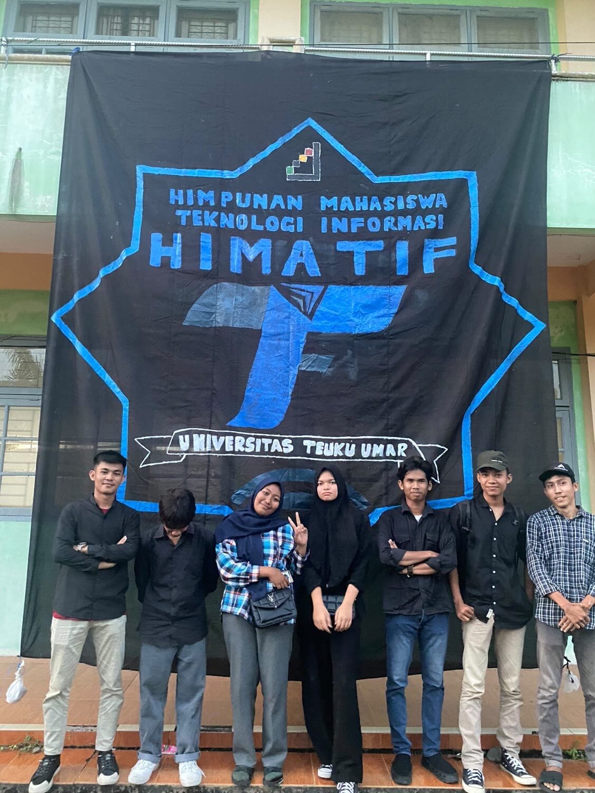

.jpg)
GENRE Aceh Barat Aceh Barat, Aceh
Ketua Data dan Informasi 2024 - Sekarang
- Mengelola dan menganalisis data untuk mendukung program-program GENRE
- Memimpin tim dalam mengumpulkan dan mendistribusikan informasi terkait kesehatan reproduksi dan pendidikan seksual kepada remaja di Aceh Barat.
- Mengorganisir dan melakukan kunjungan ke berbagai sekolah di Aceh Barat untuk memberikan sosialisasi dan edukasi kepada siswa.
- Berkolaborasi dengan berbagai pemangku kepentingan untuk meningkatkan kesadaran dan pengetahuan mengenai isu-isu penting yang dihadapi remaja
Training Dasar Organisasi (TDO) Aceh Barat, Aceh
Panitia Agustus 2022 – Oktober 2022
- Berpartisipasi dalam perencanaan dan pelaksanaan acara Training Dasar Organisasi untuk mahasiswa baru di Universitas Teuku Umar.
- Mengkoordinasikan berbagai kegiatan pelatihan.
- Memberikan bimbingan kepada mahasiswa baru dalam memahami struktur organisasi dan tanggung jawab mereka dalam lingkungan universitas


Kemah Kebangsaan dan Apel Kebangsaan Aceh Barat, Aceh
Peserta Agustus 2023
- Berpartisipasi aktif dalam kegiatan kemah yang bertujuan untuk meningkatkan rasa kebangsaan dan solidaritas antar pemuda.
- Melakukan berbagai kegiatan seperti diskusi, permainan, dan kerja kelompok yang dirancang untuk memperkuat semangat kebangsaan.
- Mengikuti apel kebangsaan yang diadakan sebagai puncak acara untuk menunjukkan komitmen terhadap nilai-nilai kebangsaan.
 

Mubes HIMATIF Aceh Barat, Aceh
Delegasi 2022
- Mewakili HIMATIF dalam Musyawarah Besar HIMATIF di Universitas Teuku Umar.
- Berpartisipasi dalam diskusi dan pengambilan keputusan penting yang berkaitan dengan arah dan kebijakan HIMATIF.
- Menyampaikan aspirasi dan masukan dari anggota HIMATIF untuk perbaikan organisasi. 